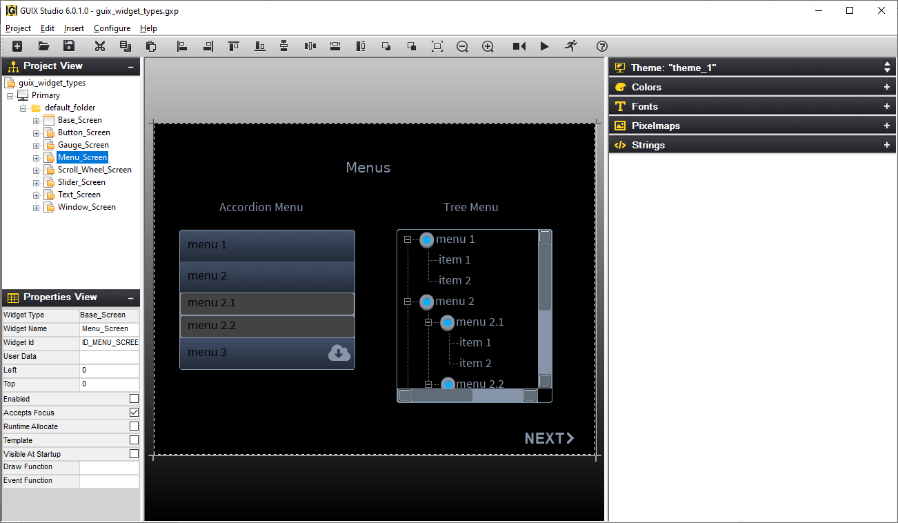

GUIX Studio Quick Start Guide
This guide provides a brief introduction into the usage of GUIX Studio. GUIX Studio is a Windows-based UI design application designed for use with the GUIX runtime library from Eclipse Foundation.
It is intended for the embedded real-time software developer using the ThreadX Real-Time Operating System (RTOS) and the GUIX UI run-time library. The developer should be familiar with standard ThreadX and GUIX concepts.
Summary
GUIX Studio includes everything you need to create, build, and run your own graphical interface design. If you are evaluating GUIX Studio, the evaluation kit is designed to allow you to build and run your GUIX design as a standalone Windows desktop application for test and evaluation purposes. Because GUIX is designed for use on nearly any embedded target capable of graphical output, the work you do and the designs you create on the desktop can always be compiled and run on your embedded target without changing any of your application software. The GUIX Studio installer places several components on your development system:
-
The GUIX Studio application.
-
Several GUIX example projects.
-
All graphics resources and fonts used in the example projects.
-
Solution files and project files for building in a Windows desktop environment using the Microsoft Visual Studio IDE.
-
Pre-built GUIX and ThreadX libraries for Win32, allowing you to build and run your own applications on your PC.
-
GUIX and ThreadX API header files.
Prerequisites
The GUIX Studio installer includes several simple example projects, and we expect that you will begin by modifying, building, and running these examples as you learn how to use the GUIX Studio application. In order to build and run the examples on the Windows desktop, you will need a Visual Studio compiler. These tools can be downloaded from the following location:
If you do not have the Visual Studio developer tools installed, you can still kick the tires and use the GUIX Studio application to create your own interface design and examine the source code produced. However you will not be able to build and run your design as a standalone application.
Running the Examples
After running the GUIX Studio installer, you will find several example Studio project and build files are included in the installed contents. To verify that your desktop tools are installed and working correctly, we recommend that you begin by building and running each of the provided examples as-is. We will refer to your installation directory as <root>, in which case you should use your file browser and browse to <root>/GUIX_Studio_6.x/examples. Within this directory you should see several simple example programs such as demo_guix_calculator, demo_guix_car_infotainment, demo_guix__home_automation, demo_guix_widget_types, and others.
Building an example
You should find a subdirectory named build within each example folder. This direction includes pre-configured projects for each supported toolchain. For example, you can browse to <root>/GUIX_Studio_6.x/examples/thermometer/build/vs_2019 and you will find a pre-configured Visual Studio solution file and project file ready to be loaded and run in the Visual Studio IDE.
We recommend that you start the Visual C++ IDE and open at least one of these examples. Press the <F7> key to build the example project, and press the <F5> key to run the program after it builds successfully. You should now see a GUIX user interface running within a Windows window.
Designing and Running your own User Interface
This quickstart guide is not a replacement for the GUIX Studio User Guide or the GUIX User Guide, but we will show you enough to get started and encourage you to continue by referring to the GUIX Studio User Guide for more detailed information.
There are two methods of creating and modifying your own user interface. You can study the GUIX library programming manual and use the GUIX API directly from within your application software to fully implement your design. More often, you will use the GUIX Studio application to do most of the work of design and layout of your screen elements, and then complete the event handling and other application logic required to make your user interface perform real work.
Each of the provided examples was created using the GUIX Studio interface design application. You should have an icon on your desktop for GUIX Studio 6.x.x.x after running the GUIX Studio installer. Start GUIX Studio now and open the project named "demo_guix_widget_types\guix_widget_types.gxp". The widget_types demo is an example project that demonstrates several variations of the most common GUIX widget types.
Now that you have a project open, click "+" to open the tree node named "Primary" in the Project View in the upper left corner of the IDE, and click on the top-level window within this folder named "Menu_Screen". Your project should not appear as shown below:

GUIX Studio Views
The GUIX Studio IDE is composed of several views. Each view is designed to assist you in navigating through your design and making changes to that design.
Project View
The top-left view is called the Project View. This view shows you each of the physical displays that are included in your project (most projects have only one display), and the screens and child widgets that have been designed to run on that display.
Properties View
Below the Project View is the Properties View. As the name Properties View implies, this view allows you to modify widgets by changing various properties associated with them.
Target View
The central display area is called the Target View. This view is a WYSIWYG display of your user interface. Because the GUIX library is drawing within the target view, this view is a pixel-accurate representation of how your design will look when executing on your embedded target. If you click on different widgets either in the Project View or the central Target View, you will see the values displayed in the Properties View change to display the properties of the widget you have selected.
Modifying the Example
GUIX Studio is designed to be intuitive. To move one of the widgets shown above, you simply click on that widget in the Target View and drag it to a new location. To change the widget colors, you click on the desired widget and change the colors displayed in the Properties View. To change the font used by a text display widget, you simply click on the desired font within the Resource View and drag-and-drop the font onto the desired target widget. Float your mouse along the toolbar buttons to see quick help regarding the operation that each button performs.
Experiment yourself and make some minor changes to the example. For example you might drag a widget to a new location, change a window background color, or resize a button. We do not recommend deleting any widgets from the example until you gain more experience working with GUIX since deleting widgets might require associated modifications to application source code.
Running the application within Studio
You can use the Edit |
Run Application menu command (or Run Application button on the button bar) to run the application immediately within a new desktop window. Custom drawing functions and other application code will not be invoked using this method, but it does allow you to quickly navigate through your UI design and get an overall idea of the look and feel of the application, including navigation from one screen to the next. |
Generating Source Files
After making your changes, you need to invoke GUIX Studio menu commands to generate new source files for your project. You can then rebuild the example program to see your changes in action. To generate source files, use the GUIX Studio menu commands Project |
Generate Resource Files and Project |
Generate Specification Files (you can also right-click on the display in the Project View to execute these commands). |
As you generate these new source files, you should observe a confirmation message telling you that the source files associated with your project have been updated. If you do not observe this confirmation message, check to make sure you have write permissions to the directory in which the project resides. You can now close the GUIX Studio application. If you have made changes to the project, GUIX Studio will ask you if you want to save those changes. Go ahead and save your changes, these examples are intended for you to use and experiment with as you learn to use GUIX Studio.
Building and running the application
Now that GUIX Studio has generated your project output files, you can compile and link to create a standalone Win32 executable. In addition, in order to incorporate any custom drawing or event handling you have defined in your application, you need to compile and link the output files generated by GUIX Studio with your own application software. We will use the Visual C++ toolchain as an example, but exactly the same procedure is used if you are building and running for your intended target.
-
Start the MSVC IDE, and open the solution <root>/GUIX_Studio_5.x/examples/demo_guix_widget_types/build/vs_2019/guix_widget_types.sln.
-
Use the <F7> key to rebuild the solution.
-
Use the <F5> key to run the program.
You should now see the running program, with the changes you made within Studio!
Learning More
The GUIX Studio User Guide is a much more thorough guide to using GUIX Studio.
In addition, the GUIX User Guide gives you much more detailed information about what is happening "Under the Hood" when your GUIX application executes. You will need to refer to both of these guides to fully utilize the capabilities of the GUIX runtime library and GUIX Studio.